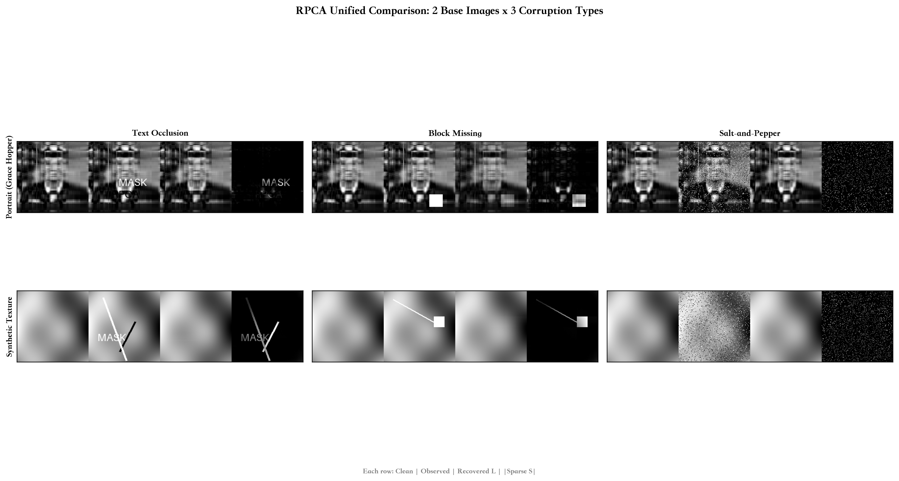
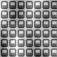
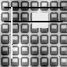
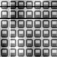
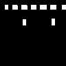
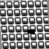
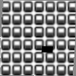
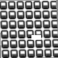
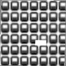
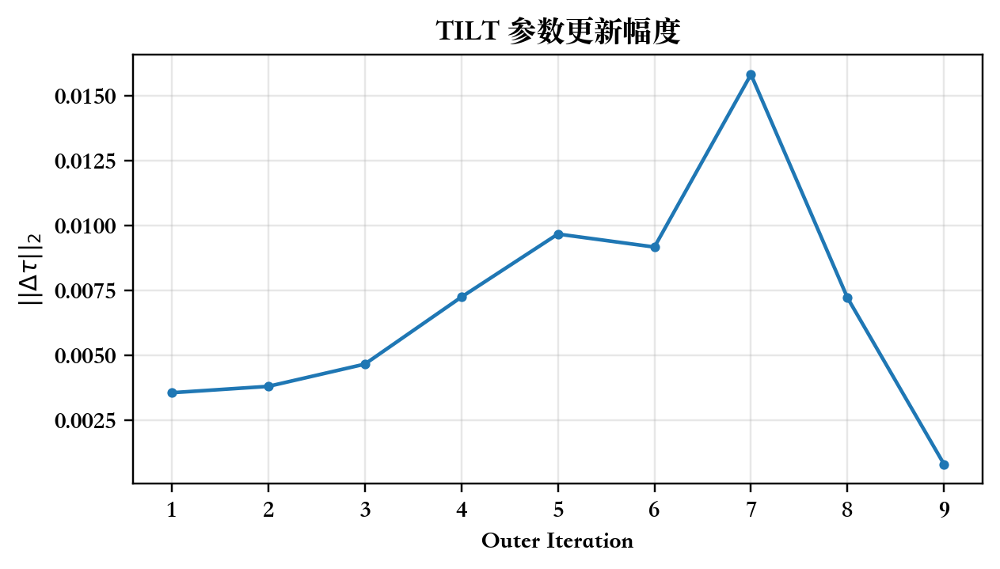

当前实验
选择一个实验
观测图
恢复图 L
数学建模 / 作业二 / 选题二
A = L + S — 把一张被污染的图拆成低秩的干净图 L 和稀疏的异常项 S。在 2 种底图 × 3 种破坏类型上的完整实验，以及 RSLRT 和 TILT 两个论文复现。

结果地图
每格从左到右：干净图 / 观测图 / RPCA 恢复 L / 分离出的稀疏异常 |S|。点击任意格子查看实验详情。
实验详情
使用说明：点击左侧列表或上方结果地图中的任意格子，右侧会显示该实验的观测图与恢复图对比。拖动中间的滑块可以直观比较 RPCA 修复前后的效果。下方还会展示分离出的稀疏异常项 |S|。
当前实验
方法说明
目标函数是 min ||L||_* + λ||S||_1, s.t. A = L + S。
把 NP-hard 的 rank/l0 松弛为核范数/l1，用交替方向法迭代求解。
只调用了 numpy.linalg.svd，其余全部手写。
纹理底图严格低秩（rank-4），人像底图做 rank-6 截断。不同底图 + 不同破坏类型，RPCA 的表现差异很大。
交互实验室
如何使用：点击下方的「加载示例」按钮可以查看课程实验中预生成的 RPCA 修复结果（观测图、恢复图 L、稀疏项 |S|）。自定义图片的实时 RPCA 修复需要本地运行 python webapp.py 启动后端服务器。
等待图片
进阶模型验证
规则纹理不仅图像域低秩，DCT 域也稀疏。模型引入 W = DCT(X) 的稀疏约束，形成低秩 + DCT 稀疏双先验。




如果纹理发生了几何畸变（拍摄角度歪了），TILT 把几何校正和低秩分解放到同一个框架里。外层估计变换参数，内层 ALM 更新 L、E。





分析
汇总
| 场景 | 方法 | PSNR (dB) | SSIM | 相对误差 | Support F1 | λ | 迭代次数 | Rank |
|---|